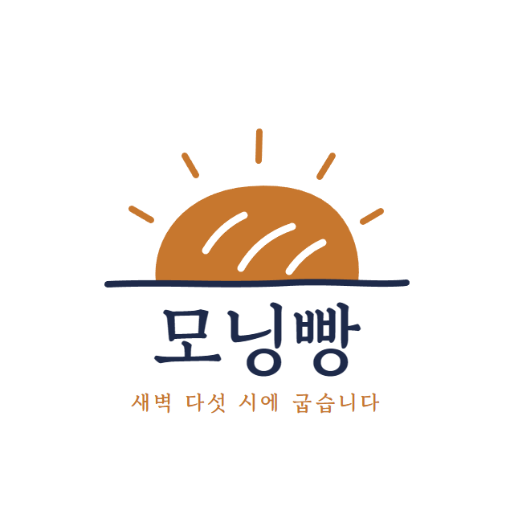
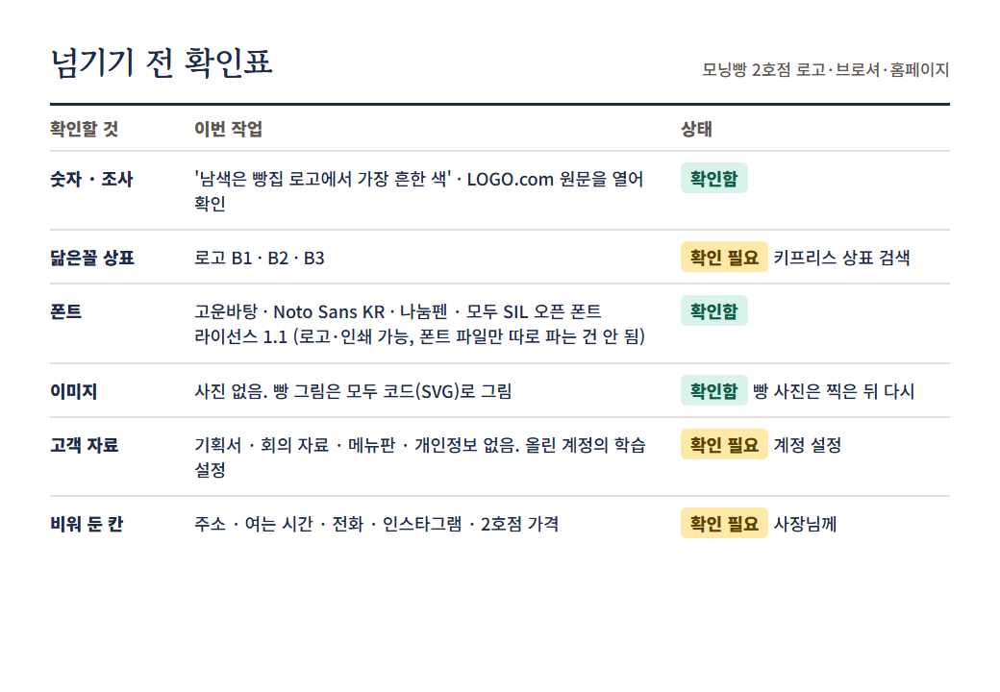

1
70%?
출처 없는 숫자
2

어디서 본 로고
3
가
폰트와 사진
4
고객 자료
예시 화면 · 숫자는 지어낸 예
빵집 손님의
70%
는 인스타그램을 보고 찾아와요.
그 숫자, 어디서 나왔어?
출처를 찾지 못했어요. '확인 필요'로 둘게요.
링크 없음
링크 없으면 안 쓴다
kipris.or.kr · 상표 검색
이름(모닝빵)으로 한 번,
비슷한 그림으로 한 번
그림은 도형 분류 코드로 찾을 수 있어요
쓰기 전에 검색
이번 로고 글꼴
고운바탕
SIL 오픈 폰트 라이선스(OFL) 1.1
로고·인쇄에 써도 됨
폰트 파일만 따로 팔기
출처: 폰트의 OFL 원문, OFL FAQ 1.1 · Noto Sans KR · 나눔펜도 OFL
이번 시안의 사진
사진 0장 · 빵 그림은 모두 코드(SVG)로 그림
사진을 쓸 땐: 누가 찍었는지, 어디까지 써도 되는지
예시 화면 · 메뉴 이름은 실제와 다를 수 있음
개인정보 설정
내 대화를 모델 학습에 쓰도록 허용
개인 요금제(Free·Pro·Max)는 직접 고름 · 팀·기업 요금제와 API는 별도 약관
출처: Anthropic, 소비자 약관 업데이트 (2025.8.28)
예: 단체 주문 문의.txt
주문하신 분 연락처:
010-1234-5678
개인정보는 지우고

실제 Claude 결과물 · 넘기기 전 확인표
못 한 건 '확인 필요'
오늘의 결론
그럴듯한 건 의심하고
출처는 남긴다